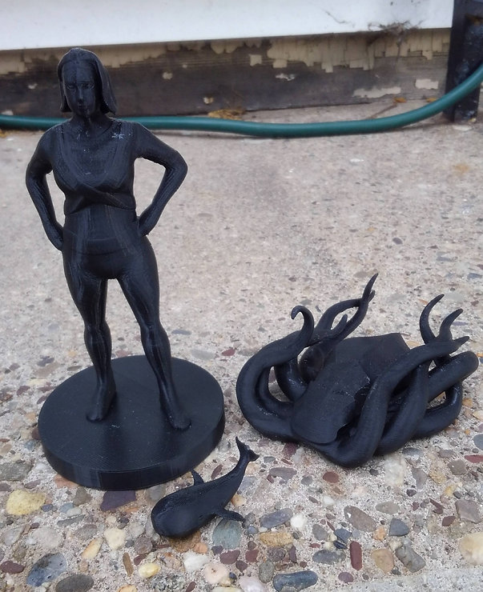
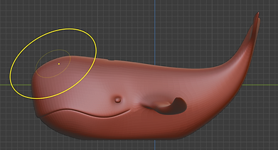
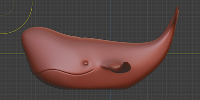
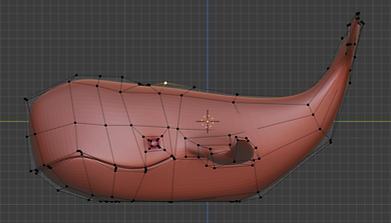
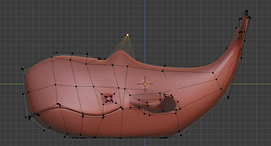
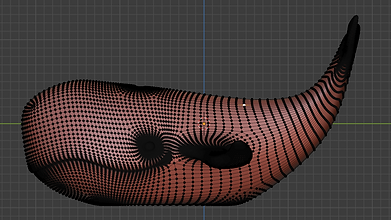
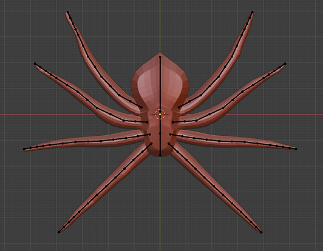
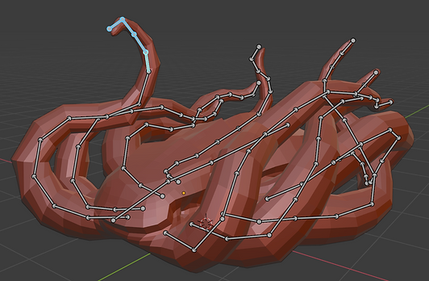
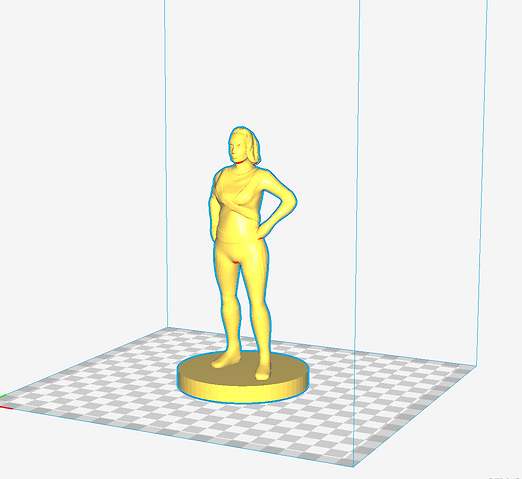
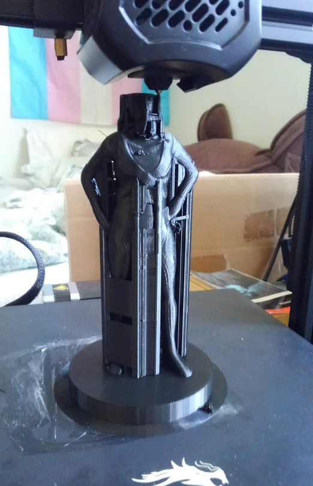

An assortment of 3D prints I've made (from scratch!) and how I made them.
-
3D Prints
Three 3D prints
-
Sculpting & 3D Modeling
While constraint based CAD programs like SolidWorks and NX excel at designing traditionally manufacturable parts, I prefer using Blender, a mesh based program, for more artistic models.
One advantage this offers is the ability to freely deform models through sculpting, use of wire cages, and "point pulling," demonstrated at left.
- 
- 
- 
- 
- 
-

Top to Bottom: Deforming the model by sculpting, deforming the model with its wire cage, deforming the model by "point pulling"
-
Rigging & Posing
I find it easiest to construct models in simple, symmetrical poses, so I can better see what I'm doing (and so I can mirror the model and do half the work).
After creating an initial model, I rig it with a posable armature and get it looking the way I want.
Following this, I touch it up one last time, merge all intersecting parts to create a solid mesh, and export to a .obj file.
- 
- 
A rigged, unposed model (Top), the model, posed (Bottom)
-
Slicing & Printing
To generate G-code the printer can understand, I slice my models in Cura. After setting the configurations, I let Cura process the model, make adjustments as necessary, and send it to the printer to print.
After breaking off support material and extra filament, the print is done!
- 
- 
A model imported into Cura (Left) and the model, mid-print (Right)